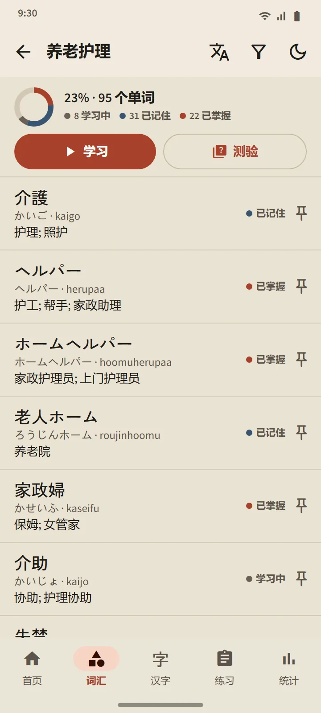

词汇
真正记得住的词汇
每张卡片都由现代间隔重复算法 FSRS 安排复习。你只需自评，应用就会算出这个单词何时再出现：下一次的间隔时间直接显示在每个按钮上。单词会从“新”经过“学习中”和“已记住”，一路升到“已掌握”，而最后这一阶段只能通过测验达到。
- 11 个大类共 95 个主题。“职场”大类包含 21 个主题：护理、建筑、农业、渔业、工厂作业、酒店、餐厅、作业安全、上司指示、合同与工资。
- 每个卡组一个页面。完成百分比、每个单词的状态，以及“学习”和“测验”按钮。
- 收录 38,085 个单词的口袋词典。可按汉字、假名、罗马字或释义搜索。
